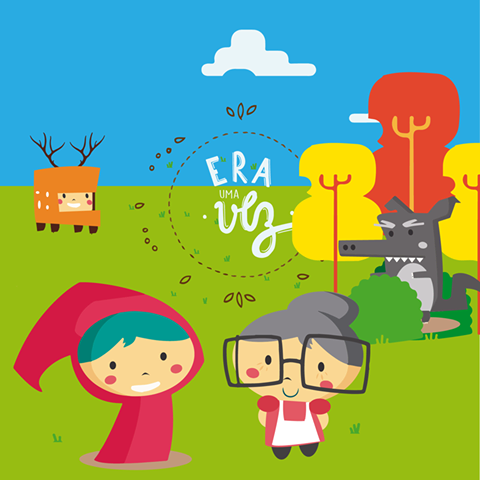

A Metodologia "Era uma vez"
O programa consistiu em um conjunto de aulas estruturadas criadas pelo LIAG, integrando o raciocínio computacional à arte gráfica original e a dinâmicas lúdicas. O enredo baseou-se em ajudar a Chapeuzinho Vermelho a encontrar a Vovó em tabuleiros e labirintos lógicos no Scratch, ensinando estruturas de decisão e repetição de forma totalmente intuitiva para as crianças do 5º e 6º ano.

01